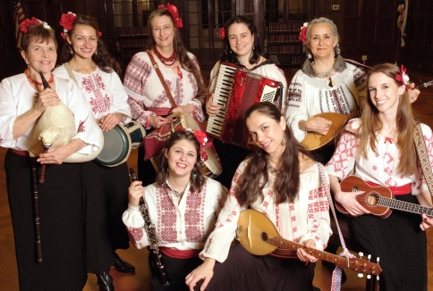

Past Events
- 171 Cedar Arts Center, Corning, NY.
- A Cappella Jam, Phoenixville, PA.
- Ambassador Theater Culture Club, Alexandria, VA.
- Andrea Clearfield's Music Salon, Philadelphia, PA.
- American Embassy, Sofia, Bulgaria
- Ann’s Choice Retirement Comm., Warminster, PA.
- Anna Crusis Women’s Choir Fall Concerts, Phila, PA.
- Arcadia University, Glenside, PA.
- Arden Theater, Philadelphia, PA.
- Beaver Folk Dance, Fort Washington, PA.
- Bel Canto Children's Chorus, Lansdale, PA.
- Bordentown Community Concerts Assoc., Bordentown, NJ.
- Bowery Poetry Club, New York, NY.
- Bulgarian Embassy, Washington, DC.
- Bulgarian National Day Celebration, New York, NY.
- Bulgarian National Radio, Sofia, Bulgaria
- Calleva Farm, Dickerson, MD.
- Camp Hill Special School, Glenmoore, PA.
- Charter Court at East Falls, Philadelphia, PA.
- Chepelare, Bulgaria
- Contempradance, Centennial Hall, Haverford, PA.
- Creative Alliance at the Patterson, Baltimore, MD.
- Creekside Coop, Elkins Park, PA.
- Crossroads Music Series, Philadelphia, PA.
- Delone Catholic High School, McSherrystown, PA.
- Eakins Oval, Philadelphia, PA.
- Elkins Estate, Elkins Park, PA.
- Elkins Park Fall Festibal, Elkins Park, PA
- Eurasia Arts Festival, Glen Spey, NY.
- Euro Market, Broomall, PA.
- First Night Binghamton, Binghamton, NY.
- First Unitarian Church of Philadelphia, PA.
- First United Methodist Church, Germantown, PA.
- Folk Music Society of New York, NY.
- Folk Show w/Gene Shay, WXPN-FM, Philadelphia, PA.
- Foulkeways at Gwynedd, Gwynedd, PA.
- Gettysburg College, Gettysburg, PA.
- Gettysburg Festival, Gettysburg, PA.
- Golden Festival, New York & Brooklyn, NY.
- Gwynedd Friends Coffeehouse, Gwynedd, PA.
- Gwynedd-Mercy College, Gwynedd Valley, PA.
- Harrisburg Area Community College, Gettysburg, PA.
- Heritage Dance Festival, Plymouth Meeting, PA.
- Heritage Festival, Gettysburg, PA.
- House Concert, Arnold, MD.
- House Concert, Upper Darby, PA.
- Ideal Senior Living Center, Binghamton, NY.
- International House, Drexel University, Philadelphia, PA
- Jenkintown High School, Jenkintown, PA.
- Junction Music, Huntingdon Valley, PA.
- Kendal at Longwood, Kennett Square, PA.
- Kendal-Crosslands Community, Kennett Square, PA.
- Kimberton Inn, Kimberton, PA.
- Kimmel Center for Performing Arts, Philadelphia, PA.
- La MaMa Experimental Theater, New York, NY.
- La Plaza Cultural Community Garden, New York, NY.
- Lunamuse at Mishkan, Philadelphia, PA.
- MCOB Event, Binghamton, NY.
- Main Line Reform Temple, Wynnewood, PA.
- Mandell Theater, Philadelphia, PA.
- Merion Friends Meetinghouse, Merion Station, PA.
- Meadowood Senior Living, Worcester, PA.
- Middfest International, Middletown, OH.

- Momchilovitsi, Bulgaria
- Musikfest, Bethlehem, PA.
- Music Gettysburg, Gettysburg, PA.
- National Palace of Culture, Sofia, Bulgaria
- New England Folk Festival (NEFFA), Mansfield, MA.
- NOMAD Festival, New Haven, CT.
- Orthodox Church of the Holy Cross, Medford, NJ.
- PA Consort Society, Bedford, PA.
- PA Presenters Conference, Pittsburgh, PA.
- Painted Bride Theatre, Philadelphia, PA.
- Philadelphia Art Museum, Philadelphia, PA.
- Philadelphia Folk Festival, Schwenksville, PA.
- Plovdiv, Bulgaria
- Polish Festival at Czestochowa, Doylestown, PA.
- Princeton Girl Choir, Princeton, NJ.
- Private Events, Philadelphia, PA region.
- PSALM, Philadelphia, PA.
- Randolph County Community Arts Center, Elkins, WV.
- Random Tea Room, Philadelphia, PA.
- Reginald F. Lewis Museum, Baltimore, MD.
- Russian Methodist Mission, Philadelphia, PA.
- Salem United Methodist Church, Zionsville, PA.
- Singing City, Chestnut Hill Presb. Church, Philadelphia, PA.
- Slavi Show, Sofia, Bulgaria
- St. Michael’s Greek Catholic Church, Binghamton, NY.
- Summer Festival, Binghamton, NY.
- Susquehanna Folk Music Society, Harrisburg, PA.
- Swarthmore College, Swarthmore, PA.
- Swarthmore Rotary Club, Swarthmore, PA.
- The Tin Angel, Philadelphia, PA.
- Tryzub Ukrainian American Sport Center, Horsham, PA.
- U.S. Post Office, Philadelphia, PA.
- Ukrainian Educational & Cultural Ctr., Jenkintown, PA.
- Ukrainian Homestead, Lehighton, PA.
- Ukrainian Institute, New York, NY.
- Ukrainian League of Philadelphia, Philadelphia, PA.
- Ukrainian Museum, New York, NY.
- Upper Adams High School, Biglerville, PA.
- Vestal Nursing Center, Binghamton, NY.
- Village of Swarthmore, PA.
- Villanova University, Villanova, PA.
- Weavers Way Co-op, Philadelphia, PA.
- Wetlands Institute, Stone Harbor, NJ
- Whitaker Center, Harrisburg, PA.
- William Way Center, Philadelphia, PA.
- World Cafe Live, Philadelphia, PA.